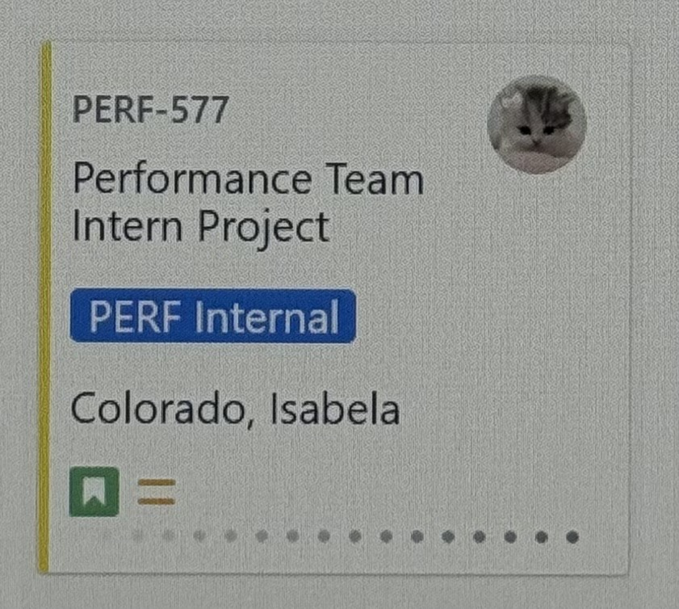

Python Automated Script
The Performance team at First Citizens Bank has a test that is run on a regular basis for the Enterprise Service Bus. This test , at times, can be made up of more than 175 scripts. These scripts must be modified manually which can be tedious and time consuming. As an intern on the Performance team, I developed a python script that reads an Excel file and updates test scripts and configuration via HTTP requests and XML manipulation. This script helps reduce the amount of manual labor when performing the Enterprise Service Bus performance test.
Key Features
- Automates manual test script updates
- Parses Excel input for dynamic configuration
- Streamlined workflow, reducing setup time significantly